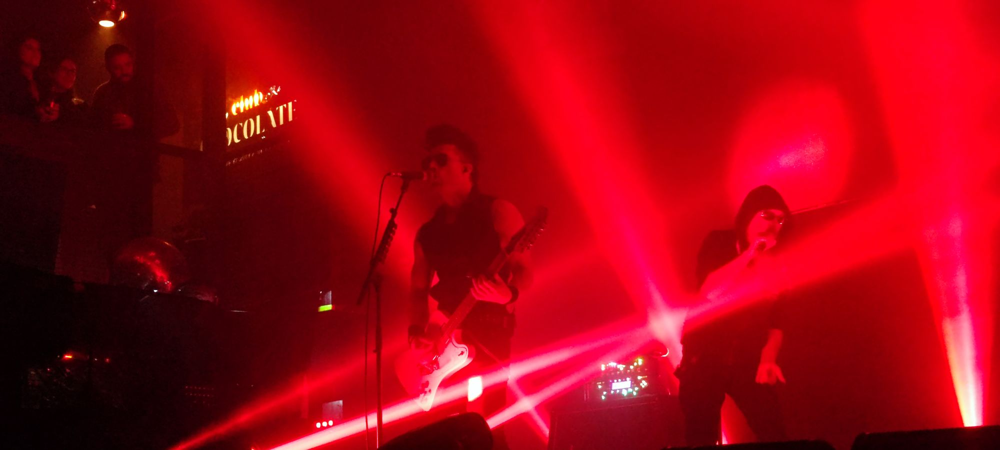

 Columnas Sisters of Mercy SCL 2023: Eldritch y cómo transferir tus genes El regreso de "The Sisters of Mercy" a nuestras tierras quedó registrado
Columnas Archivo Histórico El Claustro: Undeads en "Piso Hell" (2007) Año 2007, no teníamos nada más que el darkeo interno que nos
Discos y Multimedia Xianotic regresa con relanzamiento de single a Plataformas El proyecto solista (por ahora) de Victor Manuel Mérida, mejor conocido Amadeus